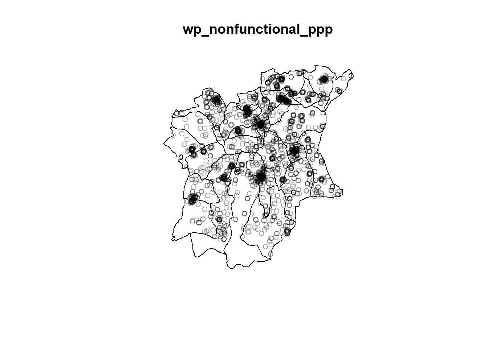

pacman::p_load(sf, tmap, funModeling, maptools, spatstat, tidyverse, raster)Take-home Exercise - Application of Spatial Point Patterns Analysis
Discover the geographical distribution of functional and non-function water points in Osun State, Nigeria
1 Introduction
2 Getting Started
2.1 Retrieving Data from the Web
Here, you will find a list with the data used, its type, format, and source it was extracted from.
| Type | Data | Format | Source |
|---|---|---|---|
| Geospatial | State GIS boundary data of Nigeria - Administration Level 1, 2 & 3 | .shp | OCHA data, extracted from the Humanitarian Data Exchange portal (data) |
| Geospatial | State GIS boundary data of Nigeria - Administration Level 2 | .shp | Data collected from geoboundaries.org |
| Aspatial | Water Point Data Exchange Plus | .csv | Data extracted from WPdx Global Data Repositories |
Note that the geoboundaries and OCHA data serve the same purpose. I decided to included both data set before choosing the most convenient one, based on a practical analysis of the variables included in the data sets.
2.2 Installing and Loading Packages
For the purpose of our analysis, we will be using the following libraries:
sf
tmap
spatstat
raster
maptools
funModeling
tidyverse and readr, dplyr, ggplot2 & tidyr dependencies
3 Handling Geospatial Data
3.1 Importing Aspatial Data, csv format
We use the read_csv() function from the readr package. This allows us to import the water point file into our R notebook. We will store the data set under the variable wp_nga.
Show code
wp_nga = read_csv("data/aspatial/Water_Point_Data_Exchange_-_Plus__WPdx__.csv", show_col_types = FALSE)Before diving into Data Wrangling, the first step is to get an understanding of the data and its attributes. By using the function glimpse() of the dplyr package, we will be able to view the attributes of this data set and data type of each field.
list(wp_nga)[[1]]
# A tibble: 406,566 × 70
row_id `#source` #lat_d…¹ #lon_…² #repo…³ #stat…⁴ #wate…⁵ #wate…⁶ #wate…⁷
<dbl> <chr> <dbl> <dbl> <chr> <chr> <chr> <chr> <chr>
1 651816 Water For Pe… -1.57e+1 35.1 06/11/… Yes <NA> <NA> Kiosk
2 584864 Global Envir… 6.72e+0 -1.58 10/25/… Yes <NA> <NA> Tapsta…
3 509399 GOAL 8.00e+0 -11.3 12/31/… Yes <NA> <NA> Tapsta…
4 21983 WASH Liberia 8.08e+0 -10.1 12/04/… Yes <NA> <NA> Tapsta…
5 660321 Water For Pe… 1.87e-1 30.4 03/14/… Yes Piped … Piped … <NA>
6 666619 Water For Pe… -4.23e-2 30.4 03/19/… Yes Piped … Piped … <NA>
7 657081 Water For Pe… 1.58e-3 30.3 03/05/… Yes <NA> <NA> Tapsta…
8 669213 Water For Pe… 4.72e-2 30.4 09/07/… Yes <NA> <NA> Tapsta…
9 668012 Water For Pe… 2.95e-1 30.7 03/02/… Yes <NA> <NA> Tapsta…
10 672047 Water For Pe… 2.85e-1 30.6 03/20/… Yes Piped … Piped … <NA>
# … with 406,556 more rows, 61 more variables: `#water_tech_category` <chr>,
# `#facility_type` <chr>, `#clean_country_name` <chr>, `#clean_adm1` <chr>,
# `#clean_adm2` <chr>, `#clean_adm3` <chr>, `#clean_adm4` <chr>,
# `#install_year` <dbl>, `#installer` <chr>, `#rehab_year` <lgl>,
# `#rehabilitator` <lgl>, `#management_clean` <chr>, `#status_clean` <chr>,
# `#pay` <chr>, `#fecal_coliform_presence` <chr>,
# `#fecal_coliform_value` <dbl>, `#subjective_quality` <chr>, …The output reveals that we have a tible data frame – wp_nga – composed of 406,566 data points and 70 columns. It is now time to take a few seconds to browse through the data to get a proper look at the different attributes in the data set.
Since our goal is to observe data only from the Osun state in Nigeria, we should take a look at the attributes that will allow us to filter the data set. It seems like the columns: clean_country_name & clean_adm1 contain the information about the country and state of the water points.
Using the filter() function, we will be to select on data points from the Osun state in Nigeria.
wp_nga = wp_nga %>%
filter(`#clean_country_name` == "Nigeria" & `#clean_adm1` == "Osun")To check if there are no mistake, we can use the function unique() to help us view all the unique strings in the columns clean_country_name & clean_adm1
unique(wp_nga$`#clean_adm1`); unique(wp_nga$`#clean_country_name`)[1] "Osun"[1] "Nigeria"We obtained the desired output, we are only left with data points located in Osun state, Nigeria
3.1.1 Converting water point data into sf point features
Using the st_as_sfc() function of the sf package, we convert the wkt field – `New Georeferenced Column` –into a sfc field.
wp_nga$Geometry = st_as_sfc(wp_nga$`New Georeferenced Column`)
wp_nga# A tibble: 5,557 × 71
row_id `#source` #lat_…¹ #lon_…² #repo…³ #stat…⁴ #wate…⁵ #wate…⁶ #wate…⁷
<dbl> <chr> <dbl> <dbl> <chr> <chr> <chr> <chr> <chr>
1 429123 GRID3 8.02 5.06 08/29/… Unknown <NA> <NA> Tapsta…
2 70566 Federal Minis… 7.32 4.79 05/11/… No Protec… Well Mechan…
3 70578 Federal Minis… 7.76 4.56 05/11/… No Boreho… Well Mechan…
4 66401 Federal Minis… 8.03 4.64 04/30/… No Boreho… Well Mechan…
5 422190 GRID3 7.87 4.88 08/29/… Unknown <NA> <NA> Tapsta…
6 422064 GRID3 7.7 4.89 08/29/… Unknown <NA> <NA> Tapsta…
7 65607 Federal Minis… 7.89 4.71 05/12/… No Boreho… Well Mechan…
8 68989 Federal Minis… 7.51 4.27 05/07/… No Boreho… Well <NA>
9 67708 Federal Minis… 7.48 4.35 04/29/… Yes Boreho… Well Mechan…
10 66419 Federal Minis… 7.63 4.50 05/08/… Yes Boreho… Well Hand P…
# … with 5,547 more rows, 62 more variables: `#water_tech_category` <chr>,
# `#facility_type` <chr>, `#clean_country_name` <chr>, `#clean_adm1` <chr>,
# `#clean_adm2` <chr>, `#clean_adm3` <chr>, `#clean_adm4` <chr>,
# `#install_year` <dbl>, `#installer` <chr>, `#rehab_year` <lgl>,
# `#rehabilitator` <lgl>, `#management_clean` <chr>, `#status_clean` <chr>,
# `#pay` <chr>, `#fecal_coliform_presence` <chr>,
# `#fecal_coliform_value` <dbl>, `#subjective_quality` <chr>, …Now, we can convert the tibble data frame into a sf object using the st_sf() function. We shall also specify the georeferencing system, crs code. Here, it seems like the data is referenced in WGS84.
wp_sf <- st_sf(wp_nga, crs=4326)
wp_sfSimple feature collection with 5557 features and 70 fields
Geometry type: POINT
Dimension: XY
Bounding box: xmin: 4.032004 ymin: 7.060309 xmax: 5.06 ymax: 8.061898
Geodetic CRS: WGS 84
# A tibble: 5,557 × 71
row_id `#source` #lat_…¹ #lon_…² #repo…³ #stat…⁴ #wate…⁵ #wate…⁶ #wate…⁷
* <dbl> <chr> <dbl> <dbl> <chr> <chr> <chr> <chr> <chr>
1 429123 GRID3 8.02 5.06 08/29/… Unknown <NA> <NA> Tapsta…
2 70566 Federal Minis… 7.32 4.79 05/11/… No Protec… Well Mechan…
3 70578 Federal Minis… 7.76 4.56 05/11/… No Boreho… Well Mechan…
4 66401 Federal Minis… 8.03 4.64 04/30/… No Boreho… Well Mechan…
5 422190 GRID3 7.87 4.88 08/29/… Unknown <NA> <NA> Tapsta…
6 422064 GRID3 7.7 4.89 08/29/… Unknown <NA> <NA> Tapsta…
7 65607 Federal Minis… 7.89 4.71 05/12/… No Boreho… Well Mechan…
8 68989 Federal Minis… 7.51 4.27 05/07/… No Boreho… Well <NA>
9 67708 Federal Minis… 7.48 4.35 04/29/… Yes Boreho… Well Mechan…
10 66419 Federal Minis… 7.63 4.50 05/08/… Yes Boreho… Well Hand P…
# … with 5,547 more rows, 62 more variables: `#water_tech_category` <chr>,
# `#facility_type` <chr>, `#clean_country_name` <chr>, `#clean_adm1` <chr>,
# `#clean_adm2` <chr>, `#clean_adm3` <chr>, `#clean_adm4` <chr>,
# `#install_year` <dbl>, `#installer` <chr>, `#rehab_year` <lgl>,
# `#rehabilitator` <lgl>, `#management_clean` <chr>, `#status_clean` <chr>,
# `#pay` <chr>, `#fecal_coliform_presence` <chr>,
# `#fecal_coliform_value` <dbl>, `#subjective_quality` <chr>, …3.1.2 Transforming into Nigeria projected coordinate system
Using the function st_transform(), we transform the sf coordinates of our data points into the Nigerian projected coordinate system.
Note that there are three Projected Coordinate Systems of Nigeria, they are: EPSG: 26391, 26392, and 26303. For the purpose of our analysis, we will choose EPSG: 26391.
wp_sf <- wp_sf %>%
st_transform(crs = 26391)3.2 Importing Geospatial Data, shp format
3.2.1 The NGA data set
nga = st_read(dsn = "data/geospatial",
layer = "nga_admbnda_adm2") %>%
filter(ADM1_EN == "Osun")Reading layer `nga_admbnda_adm2' from data source
`C:\p-haas\IS415\Take-home_Ex\data\geospatial' using driver `ESRI Shapefile'
Simple feature collection with 774 features and 16 fields
Geometry type: MULTIPOLYGON
Dimension: XY
Bounding box: xmin: 2.668534 ymin: 4.273007 xmax: 14.67882 ymax: 13.89442
Geodetic CRS: WGS 84st_crs(nga)Coordinate Reference System:
User input: WGS 84
wkt:
GEOGCRS["WGS 84",
DATUM["World Geodetic System 1984",
ELLIPSOID["WGS 84",6378137,298.257223563,
LENGTHUNIT["metre",1]]],
PRIMEM["Greenwich",0,
ANGLEUNIT["degree",0.0174532925199433]],
CS[ellipsoidal,2],
AXIS["latitude",north,
ORDER[1],
ANGLEUNIT["degree",0.0174532925199433]],
AXIS["longitude",east,
ORDER[2],
ANGLEUNIT["degree",0.0174532925199433]],
ID["EPSG",4326]]nga <- nga %>%
st_transform(crs = 26391)3.2.2 The geoBoundaries data set
geoNGA = st_read(dsn = "data/geospatial",
layer = "geoBoundaries-NGA-ADM2")Reading layer `geoBoundaries-NGA-ADM2' from data source
`C:\p-haas\IS415\Take-home_Ex\data\geospatial' using driver `ESRI Shapefile'
Simple feature collection with 774 features and 5 fields
Geometry type: MULTIPOLYGON
Dimension: XY
Bounding box: xmin: 2.668534 ymin: 4.273007 xmax: 14.67882 ymax: 13.89442
Geodetic CRS: WGS 84st_crs(geoNGA)Coordinate Reference System:
User input: WGS 84
wkt:
GEOGCRS["WGS 84",
ENSEMBLE["World Geodetic System 1984 ensemble",
MEMBER["World Geodetic System 1984 (Transit)"],
MEMBER["World Geodetic System 1984 (G730)"],
MEMBER["World Geodetic System 1984 (G873)"],
MEMBER["World Geodetic System 1984 (G1150)"],
MEMBER["World Geodetic System 1984 (G1674)"],
MEMBER["World Geodetic System 1984 (G1762)"],
MEMBER["World Geodetic System 1984 (G2139)"],
ELLIPSOID["WGS 84",6378137,298.257223563,
LENGTHUNIT["metre",1]],
ENSEMBLEACCURACY[2.0]],
PRIMEM["Greenwich",0,
ANGLEUNIT["degree",0.0174532925199433]],
CS[ellipsoidal,2],
AXIS["geodetic latitude (Lat)",north,
ORDER[1],
ANGLEUNIT["degree",0.0174532925199433]],
AXIS["geodetic longitude (Lon)",east,
ORDER[2],
ANGLEUNIT["degree",0.0174532925199433]],
USAGE[
SCOPE["Horizontal component of 3D system."],
AREA["World."],
BBOX[-90,-180,90,180]],
ID["EPSG",4326]]geoNGA <- geoNGA %>%
st_transform(crs = 26391)4 Data Cleaning & Wrangling
4.1 Geospatial Data Cleaning
4.1.1 Excluding redundant fields
nga <- nga %>%
dplyr::select(c(3:4, 8:9))4.1.2 Checking for duplicated name
nga$ADM2_EN[duplicated(nga$ADM2_EN)==TRUE]character(0)4.2 Data Wrangling for Water Point Data
funModeling::freq(data = wp_sf,
input = '#status_clean')
#status_clean frequency percentage cumulative_perc
1 Functional 2319 41.73 41.73
2 Non-Functional 2008 36.13 77.86
3 <NA> 748 13.46 91.32
4 Functional but needs repair 248 4.46 95.78
5 Non-Functional due to dry season 151 2.72 98.50
6 Functional but not in use 63 1.13 99.63
7 Abandoned 15 0.27 99.90
8 Abandoned/Decommissioned 5 0.09 100.00wp_sf_nga <- wp_sf %>%
rename(status_clean = '#status_clean') %>%
dplyr::select(status_clean) %>%
mutate(status_clean = replace_na(
status_clean, "unknown"))4.2.1 Extracting water point data
wp_sf_functional <- wp_sf_nga %>%
filter(status_clean %in%
c("Functional",
"Functional but not in use",
"Functional but needs repair"))wp_sf_nonfunctional <- wp_sf_nga %>%
filter(status_clean %in%
c("Abandoned/Decommissioned",
"Abandoned",
"Non-Functional due to dry season",
"Non-Functional",
"Non functional due to dry season"))wp_sf_unknown <- wp_sf_nga %>%
filter(status_clean == "unknown")4.2.2 Performing Point-in-Polygon Count
nga_wp <- nga %>%
mutate(`total_wp` = lengths(
st_intersects(nga, wp_sf_nga))) %>%
mutate(`wp_functional` = lengths(
st_intersects(nga, wp_sf_functional))) %>%
mutate(`wp_nonfunctional` = lengths(
st_intersects(nga, wp_sf_nonfunctional))) %>%
mutate(`wp_unknown` = lengths(
st_intersects(nga, wp_sf_unknown)))4.3 Converting sf data frames to sp’s Spatial* class
wp_functional = as_Spatial(wp_sf_functional)
wp_nonfunctional = as_Spatial(wp_sf_nonfunctional)
nga_spat = as_Spatial(nga)wp_functionalclass : SpatialPointsDataFrame
features : 2630
extent : 179198.9, 291989.5, 341443.2, 449013.7 (xmin, xmax, ymin, ymax)
crs : +proj=tmerc +lat_0=4 +lon_0=4.5 +k=0.99975 +x_0=230738.26 +y_0=0 +a=6378249.145 +rf=293.465 +towgs84=-92,-93,122,0,0,0,0 +units=m +no_defs
variables : 1
names : status_clean
min values : Functional
max values : Functional but not in use wp_nonfunctionalclass : SpatialPointsDataFrame
features : 2179
extent : 182490.7, 291855.5, 338261.8, 448933.5 (xmin, xmax, ymin, ymax)
crs : +proj=tmerc +lat_0=4 +lon_0=4.5 +k=0.99975 +x_0=230738.26 +y_0=0 +a=6378249.145 +rf=293.465 +towgs84=-92,-93,122,0,0,0,0 +units=m +no_defs
variables : 1
names : status_clean
min values : Abandoned
max values : Non-Functional due to dry season nga_spatclass : SpatialPolygonsDataFrame
features : 30
extent : 178398.7, 292278.9, 329463.4, 452734.9 (xmin, xmax, ymin, ymax)
crs : +proj=tmerc +lat_0=4 +lon_0=4.5 +k=0.99975 +x_0=230738.26 +y_0=0 +a=6378249.145 +rf=293.465 +towgs84=-92,-93,122,0,0,0,0 +units=m +no_defs
variables : 4
names : ADM2_EN, ADM2_PCODE, ADM1_EN, ADM1_PCODE
min values : Aiyedade, NG030001, Osun, NG030
max values : Osogbo, NG030030, Osun, NG030 4.4 Converting the Spatial* class into generic sp format
wp_functional_sp <- as(wp_functional, "SpatialPoints")
wp_nonfunctional_sp <- as(wp_nonfunctional, "SpatialPoints")
nga_sp <- as(nga_spat, "SpatialPolygons")4.5 Converting the generic sp format into spatstat’s ppp format
wp_functional_ppp <- as(wp_functional_sp, "ppp")
wp_nonfunctional_ppp <- as(wp_nonfunctional_sp, "ppp")wp_functional_pppPlanar point pattern: 2630 points
window: rectangle = [179198.89, 291989.51] x [341443.2, 449013.7] unitsplot(wp_functional_ppp)
summary(wp_functional_ppp)Planar point pattern: 2630 points
Average intensity 2.167651e-07 points per square unit
Coordinates are given to 2 decimal places
i.e. rounded to the nearest multiple of 0.01 units
Window: rectangle = [179198.89, 291989.51] x [341443.2, 449013.7] units
(112800 x 107600 units)
Window area = 12132900000 square units4.6 Creating owin object
nga_owin <- as(nga_sp, "owin")
plot(nga_owin)
4.7 Combining point events object and owin object
wp_functional_ppp = wp_functional_ppp[nga_owin]
wp_nonfunctional_ppp = wp_nonfunctional_ppp[nga_owin]plot(wp_functional_ppp)
5 Exploratory Spatial Data Analysis
This section has for objective:
Deriving kernel density maps of functional and non-functional water points
Display kernel density maps of the Osun State, Nigeria on openstreetmap using appropriate tmap functions
Describe the spatial patterns revealed by the kernel density maps & highlight the advantage of kernel density map over point map
5.1 Kernel Density Estimation
Our first step to KDE is to derive two density maps for functional and non-functional water points to check for any potential data problem. Here, we suspect that the scale of density values will be expressed in meters. The default measurement unit of Nigeria’s projected coordinate system – EPSG:26391 – is expressed in meters. We shall verify that and correct it to kilometers to get a more desirable map output (scale).
For starters, we should use the density() function to compute kernel density estimates for both types of water points. We will use two methods for smoothing the bandwidth for the kernel estimation point process intensity and leave the default kernel smoothing method – the Gaussian method.
Show code
kde_wpfunc.m <- adaptive.density(wp_functional_ppp,
method = "kernel")
kde_wpnonfunc.m <- adaptive.density(wp_nonfunctional_ppp,
method = "kernel")
par(mfrow=c(1,2))
plot(kde_wpfunc.m,
main = "Functional Water Points",
ribside=c("right"))
plot(kde_wpnonfunc.m,
main = "Non-Functional Water Points",
ribside=c("right"))
Show code
kde_wpfunc.mppl <- density(wp_functional_ppp,
sigma=bw.ppl,
edge=TRUE)
kde_wpnonfunc.mppl <- density(wp_nonfunctional_ppp,
sigma=bw.ppl,
edge=TRUE)
par(mfrow=c(1,2))
plot(kde_wpfunc.mppl,
main = "Functional Water Points",
ribside=c("bottom"))
plot(kde_wpnonfunc.mppl,
main = "Non-Functional Water Points",
ribside=c("bottom"))The density values of the output range from 0 to 0.000006 and it makes for an output difficult to comprehend and interpret. Thus, we will re-scale our density values to get an output in “number of points per square kilometer”.
5.1.1 Re-scalling KDE values
To change the scale of the density values, we use the rescale() function from the spatstat.geom package. Here, we multiply values of our two objects of class ppp by 1000. We thus express them in kilometers and define the unit name to be “km”.
wp_functional_ppp.km <- rescale(wp_functional_ppp, 1000, "km")
wp_nonfunctional_ppp.km <- rescale(wp_nonfunctional_ppp, 1000, "km")We can now run the previously used density() function using the re-scaled data and plot the output KDE map.
Show code
kde_wpfunc.km <- adaptive.density(wp_functional_ppp.km,
method = "kernel")
kde_wpnonfunc.km <- adaptive.density(wp_nonfunctional_ppp.km,
method = "kernel")
par(mfrow=c(1,2))
plot(kde_wpfunc.km,
main = "Functional Water Points",
ribside=c("bottom"))
plot(kde_wpnonfunc.km,
main = "Non-Functional Water Points",
ribside=c("bottom"))
Show code
kde_wpfunc.ppl <- density(wp_functional_ppp.km,
sigma = bw.ppl,
edge = TRUE)
kde_wpnonfunc.ppl <- density(wp_nonfunctional_ppp.km,
sigma = bw.ppl,
edge = TRUE)
par(mfrow=c(1,2))
plot(kde_wpfunc.ppl,
main = "Functional Water Points",
ribside=c("bottom"))
plot(kde_wpnonfunc.ppl,
main = "Non-Functional Water Points",
ribside=c("bottom"))We start observing signs of potential clustering but, for now, we shall focus on transforming our im objects into rasters to plot our KDE maps using the tmap package. We will talk more about CSR and clustering later.
5.1.2 Convert KDE output into grid object
Show code
gridded_wpfunc <- as.SpatialGridDataFrame.im(kde_wpfunc.km)
gridded_wpnonfunc <- as.SpatialGridDataFrame.im(kde_wpnonfunc.km)
spplot(gridded_wpfunc)
spplot(gridded_wpnonfunc)

Show code
gridded_wpfunc.ppl <- as.SpatialGridDataFrame.im(kde_wpfunc.ppl)
gridded_wpnonfunc.ppl <- as.SpatialGridDataFrame.im(kde_wpnonfunc.ppl)
spplot(gridded_wpfunc.ppl)
spplot(gridded_wpnonfunc.ppl)

5.1.3 Converting grid object into raster
kde_wpfunc_raster <- raster(gridded_wpfunc)
kde_wpfunc_rasterclass : RasterLayer
dimensions : 128, 128, 16384 (nrow, ncol, ncell)
resolution : 0.8896887, 0.9630582 (x, y)
extent : 178.3987, 292.2789, 329.4634, 452.7349 (xmin, xmax, ymin, ymax)
crs : NA
source : memory
names : v
values : 1.702123e-16, 26.9948 (min, max)kde_wpnonfunc_raster <- raster(gridded_wpnonfunc)
kde_wpnonfunc_rasterclass : RasterLayer
dimensions : 128, 128, 16384 (nrow, ncol, ncell)
resolution : 0.8896887, 0.9630582 (x, y)
extent : 178.3987, 292.2789, 329.4634, 452.7349 (xmin, xmax, ymin, ymax)
crs : NA
source : memory
names : v
values : 2.624981e-14, 23.06775 (min, max)5.1.4 Assigning projection systems
Show code
projection(kde_wpfunc_raster) <- CRS("+init=EPSG:26391 +datum:WGS84 +units=km")
kde_wpfunc_rasterclass : RasterLayer
dimensions : 128, 128, 16384 (nrow, ncol, ncell)
resolution : 0.8896887, 0.9630582 (x, y)
extent : 178.3987, 292.2789, 329.4634, 452.7349 (xmin, xmax, ymin, ymax)
crs : +init=EPSG:26391 +datum:WGS84 +units=km
source : memory
names : v
values : 1.702123e-16, 26.9948 (min, max)projection(kde_wpnonfunc_raster) <- CRS("+init=EPSG:26391 +datum:WGS84 +units=km")
kde_wpnonfunc_rasterclass : RasterLayer
dimensions : 128, 128, 16384 (nrow, ncol, ncell)
resolution : 0.8896887, 0.9630582 (x, y)
extent : 178.3987, 292.2789, 329.4634, 452.7349 (xmin, xmax, ymin, ymax)
crs : +init=EPSG:26391 +datum:WGS84 +units=km
source : memory
names : v
values : 2.624981e-14, 23.06775 (min, max)5.2 Visualizing KDE with tmap
tmap_mode('view')
tm_basemap("OpenStreetMap") +
tm_shape(kde_wpfunc_raster) +
tm_raster("v")tmap_mode('view')
tm_basemap("OpenStreetMap") +
tm_shape(kde_wpnonfunc_raster) +
tm_raster("v")5.3 Nearest Neighbor Index
Before moving on to the Second-order Spatial Points Analysis, I would like to perform the Clark-Evans test to measure aggregation of functional and non-functional water points. The goal is to test the randomness of the data points and assess whether they are randomly distributed, clustered or dispersed.
We will perform a series of 2 tests, first on functional water points and, second, on non-functional water points. We will be using the clarkevans.test() function of the spatstat package.
The hypotheses are the following:
Test 1
H0 : Functional Water Points are randomly distributed
H1 : Functional Water Points are not randomly distributed, they are clustered
Test 2
H0 : Non-functional Water Points are randomly distributed
H1 : Non-functional Water Points are not randomly distributed, they are clustered
As you may have read above, we determine the alternative hypothesis to be that water points are clustered. This decision is based on an intuition that derives from the previously seen visual representations of functional and non-functional water points. Indeed, we observed in our KDE plots some concentration of data points across the Osun State. Thus, we would like to test for clustering directly to prove this intuition.
Please note that when conducting our tests, we will use a 5% significance level.
5.3.1 Test 1 on functional water points
First test on functional water points.
clarkevans.test(wp_functional_ppp,
correction="none",
clipregion=NULL,
alternative=c("clustered"),
nsim=99)
Clark-Evans test
No edge correction
Monte Carlo test based on 99 simulations of CSR with fixed n
data: wp_functional_ppp
R = 0.44265, p-value = 0.01
alternative hypothesis: clustered (R < 1)5.3.2 Test 2 on non-functional water points
Second test on non-functional water points
clarkevans.test(wp_nonfunctional_ppp,
correction="none",
clipregion=NULL,
alternative=c("clustered"),
nsim=99)
Clark-Evans test
No edge correction
Monte Carlo test based on 99 simulations of CSR with fixed n
data: wp_nonfunctional_ppp
R = 0.43223, p-value = 0.01
alternative hypothesis: clustered (R < 1)5.3.3 Conclusion
Conclusion?
6 7 - Second-order Spatial Point Patterns Analysis
6.1 7.1 - Formulate the null hypothesis and alternative hypothesis and select the confidence level
6.2 7.2 - Perform the test by using appropriate Second order spatial point patterns analysis technique
# G_tm = Gest(wp_functional_ppp, correction = "best")
# plot(G_tm)6.3 7.3 - With reference to the analysis results, draw statistical conclusions
7 8 - Spatial Correlation Analysis
In this section, you are required to confirm statistically if the spatial distribution of functional and non-functional water points are independent from each other.
7.1 8.1 - Formulate the null hypothesis and alternative hypothesis and select the confidence level
7.2 8.2 - Perform the test by using appropriate Second order spatial point patterns analysis technique
#L_wpfunc = Lest(wp_functional_ppp, correction = "Ripley")
#plot(L_wpfunc, . -r ~ r, ylab= "L(d)-r", xlab = "d(m)")# L_wp1.csr <- envelope(wp1_ppp, Lest, nsim = 99, rank = 1, glocal=TRUE)
# plot(L_wp1.csr, . - r ~ r, xlab="d", ylab="L(d)-r", main = "L-test for Functional WP in Borepe")# K_wpnonfunc = Kest(wp_nonfunctional_ppp, correction = "isotropic")
# plot(K_wpnonfunc, . -r ~ r, ylab= "K(d)-r", xlab = "d(m)", xlim=c(0,1000))